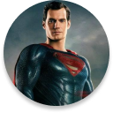

Batman
Bruce Wayne es el único personaje que se identifica como Batman y aparece en Batman, Detective Comics, Batman y Robin, y Batman: The Dark Knight. Dick Grayson vuelve al manto de Nightwing
Ver más

Harley Quinn
La creación de Harley Quinn fue una idea de último minuto propuesta por el escritor estadounidense Paul Dini para modificar una escena del vigésimo-segundo episodio de Batman: la serie animada
Ver más

Superman
Bajo la identidad de Clark Kent, Superman vive en medio de los humanos como un «tímido reportero» del diario Daily Planet de Metrópolis. Ahí trabaja junto a la reportera Lois Lane.
Ver más